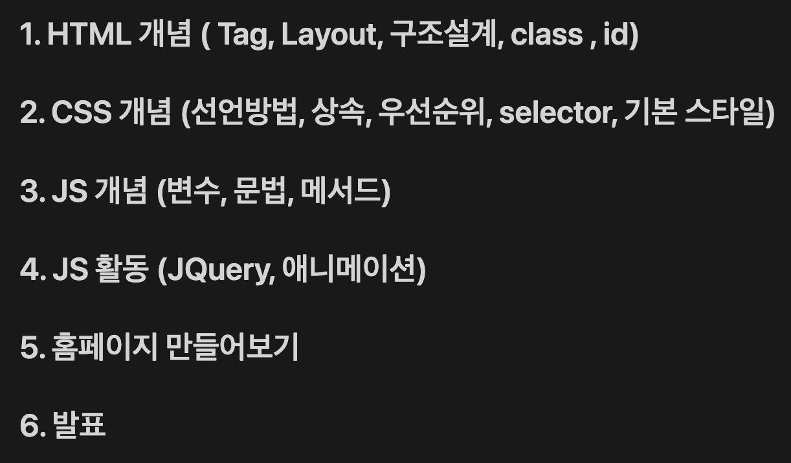

Web Part
UI 구현, 서버 통신 등 웹 서비스 개발에 필요한 역량들을 학습합니다.
또한 기획자, 디자이너, 서버 개발자와의 협업 경험을 통해 개발 협업 방식을 익힐 수 있습니다.

HTML
웹 브라우저에서 문서 및 웹 페이지가 표시되는 방법을 규정하는 마크업 언어이며,
어떠한 웹 사이트에서든 블록(block)을 구성하는 데 사용되는 언어이기도 합니다.
HTML을 이용하면, 웹 사이트의 구조를 만들 수 있습니다.
CSS(Cascading Style Sheets)
HTML로 만들어진 문서의 (컬러, 폰트 스타일, 레이아웃, 반응형 특징 등의) 스타일을
지정하는 방식을 규정하는 스타일 시트 언어입니다.
CSS는 웹사이트를 시각적으로 보다 매력적으로 만드는 기능을 제공합니다.
JavaScript
웹사이트가 로딩된 이후에 CSS와 HTML 구성요소들을 변형할 수 있게 해주며,
이를 통해서 웹사이트를 보다 인터랙티브(interactive)하게 만들고 사용자의 참여율도
높일 수 있습니다.
Curriculum
Vision
-
성장
-
혁신
-
접근성